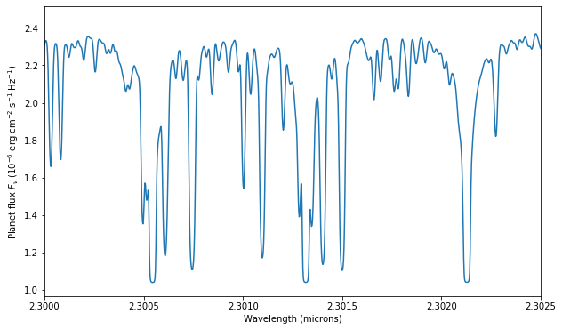

High-resolution spectra¶
Let’s set up the atmosphere as in the “Getting Started” example, but this time for high-resolution spectra:
[1]:
import numpy as np
from petitRADTRANS import Radtrans
atmosphere = Radtrans(line_species = ['H2O_main_iso', 'CO_all_iso', \
'CH4_main_iso', 'CO2_main_iso', 'Na', 'K'], \
rayleigh_species = ['H2', 'He'], \
continuum_opacities = ['H2-H2', 'H2-He'], \
wlen_bords_micron = [2.2, 2.4], \
mode = 'lbl')
pressures = np.logspace(-10, 2, 130)
atmosphere.setup_opa_structure(pressures)
Read CIA opacities for H2-H2...
Read CIA opacities for H2-He...
Done.
Units in petitRADTRANS: remember that all units in petitRADTRANS are in cgs, except for pressure, which is in bars, and the mean molecular weight (MMW), which is in units of atomic mass units.
Note: now different isotopologues are accessible. We have invoked the high resolution mode by setting the keyword argument mode to "lbl". We also loaded a smaller wavelength range, because the high-resolution opacities are pretty big…
We define the planetary radius and gravity at reference pressure \(P_0\), as well as the temperatures, abundances and mean molecular weight like before, see “Getting Started” for more information:
[2]:
import petitRADTRANS.nat_cst as nc
R_pl = 1.838*nc.r_jup_mean
gravity = 1e1**2.45
P0 = 0.01
kappa_IR = 0.01
gamma = 0.4
T_int = 200.
T_equ = 1500.
temperature = nc.guillot_global(pressures, kappa_IR, gamma, gravity, T_int, T_equ)
abundances = {}
abundances['H2'] = 0.74 * np.ones_like(temperature)
abundances['He'] = 0.24 * np.ones_like(temperature)
abundances['H2O_main_iso'] = 0.001 * np.ones_like(temperature)
abundances['CO_all_iso'] = 0.01 * np.ones_like(temperature)
abundances['CO2_main_iso'] = 0.00001 * np.ones_like(temperature)
abundances['CH4_main_iso'] = 0.000001 * np.ones_like(temperature)
abundances['Na'] = 0.00001 * np.ones_like(temperature)
abundances['K'] = 0.000001 * np.ones_like(temperature)
MMW = 2.33 * np.ones_like(temperature)
Abundances in petitRADTRANS: remember that abundances in petitCODE are in units of mass fractions, not number fractions (aka volume mixing ratio, VMR). You can convert between mass fractions and VMRs by using \begin{equation}
X_i = \frac{\mu_i}{\mu}n_i,
\end{equation} where \(X_i\) is the mass fraction of species \(i\), \(\mu_i\) the mass of a single molecule/atom/ion/… of species \(i\), \(\mu\) is the atmospheric mean molecular weight, and \(n_i\) is the VMR of species \(i\).
Now, let’s calculate and plot the transmission spectrum:
[3]:
atmosphere.calc_transm(temperature, abundances, gravity, MMW, R_pl=R_pl, P0_bar=P0)
import pylab as plt
plt.rcParams['figure.figsize'] = (10, 6)
plt.plot(nc.c/atmosphere.freq/1e-4, atmosphere.transm_rad/nc.r_jup_mean)
plt.xlabel('Wavelength (microns)')
plt.ylabel(r'Transit radius ($\rm R_{Jup}$)')
plt.show()
plt.clf()

Let’s zoom-in a bit, to see individual lines
[4]:
plt.plot(nc.c/atmosphere.freq/1e-4, atmosphere.transm_rad/nc.r_jup_mean)
plt.xlim([2.3,2.3025])
plt.xscale('log')
plt.xlabel('Wavelength (microns)')
plt.ylabel(r'Transit radius ($\rm R_{Jup}$)')
plt.show()
plt.clf()

As before, the flux can be calculated like this
[5]:
atmosphere.calc_flux(temperature, abundances, gravity, MMW)
plt.plot(nc.c/atmosphere.freq/1e-4, atmosphere.flux/1e-6)
plt.xlabel('Wavelength (microns)')
plt.ylabel(r'Planet flux $F_\nu$ (10$^{-6}$ erg cm$^{-2}$ s$^{-1}$ Hz$^{-1}$)')
plt.show()
plt.clf()

Scattering and petitRADTRANS: remember that scattering is not included for emission spectra in petitRADTRANS (but it is for the transmission spectra). We plan to migrate the scattering implementation of petitCODE to petitRADTRANS soon.
Zooming in here as well:
[6]:
plt.plot(nc.c/atmosphere.freq/1e-4, atmosphere.flux/1e-6)
plt.xlim([2.3,2.3025])
plt.xlabel('Wavelength (microns)')
plt.ylabel(r'Planet flux $F_\nu$ (10$^{-6}$ erg cm$^{-2}$ s$^{-1}$ Hz$^{-1}$)')
plt.show()
plt.clf()
